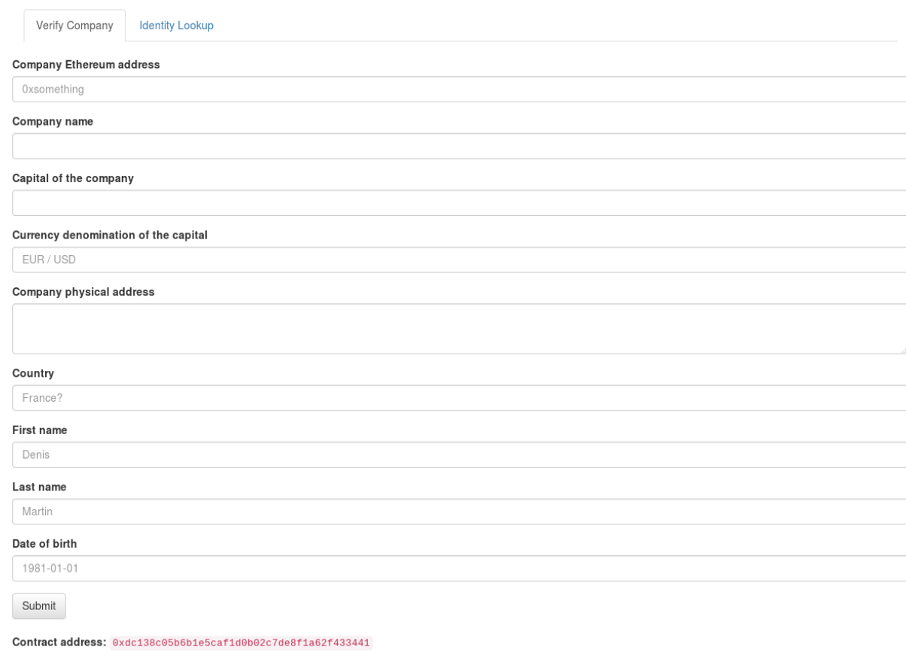
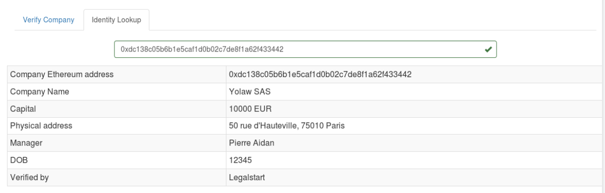

Alexandre Hajjar
Feb 3, 2019
Making software that opens law up
With fellow @onyb @ Legalstart
Observed in France
Taking lesson from open-source, open data initiatives and public blockchains
State designated entities
Associates, capital and a common goal
=>
Company = { Name,
[AssociatePerson],
CapitalAmount
}Company = { Name,
[AssociatePerson],
CapitalAmount,
EthereumAddress
}Companies are recorded in the main Opengreffe record


Yes, under Articles 1832 and 1871, using “Société en Participation”
(but unlimited liability and no moral entity)
And replace a monopoly!
Processes that are moved on-chain are more easily auditable and can be verifyably safe
Moving more of the due diligence process on-chain would be interesting
Notably by automatically resolving an Ethereum address to a company identification, allowing automated business (DAOs…)
One more attempt to move concepts managed by law into code
(and bring open-source goodness to it)
In search for feedback, ideas